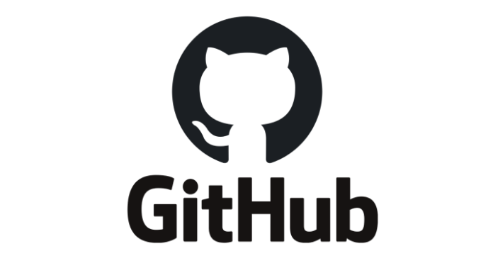

Home page
Home page
Git

GitHub, Inc. is a United States-based global company that provides hosting for software development version control using Git.
GitHub is built for collaboration. Set up an organization to improve the way your team works together, and get access to more features.
Requirements for Git submission:
- Your website must contain at least four different .html pages, and it should be possible to get from any page on your website to any other page by following one or more hyperlinks.
- Your website must include at least one list (ordered or unordered), at least one table, and at least one image.
- Your website must have at least one stylesheet file.
- Your stylesheet(s) must use at least five different CSS properties, and at least five different types of CSS selectors. You must use the #id selector at least once, and the .class selector at least once.
- Your stylesheet(s) must include at least one mobile-responsive @media query, such that something about the styling changes for smaller screens.
- You must use Bootstrap 4 on your website, taking advantage of at least one Bootstrap component, and using at least two Bootstrap columns for layout purposes using Bootstrap’s grid model.
- Your stylesheets must use at least one SCSS variable, at least one example of SCSS nesting, and at least one use of SCSS inheritance.
- In README.md, include a short writeup describing your project, what’s contained in each file, and (optionally) any other additional information the staff should know about your project.
Pages
| Week 1 |
Week 2 |
Week 3 |
Week 4 |
Week 5 |
| Git |
HTML, CSS |
Flask |
SQL |
ORMs, APIs |
| Week 6 |
Week 7 |
Week 8 |
Week 9 |
Week 10 |
| JavaScript |
Front Ends |
Django |
Testing, CI/CDe |
GitHub, Travis CI |